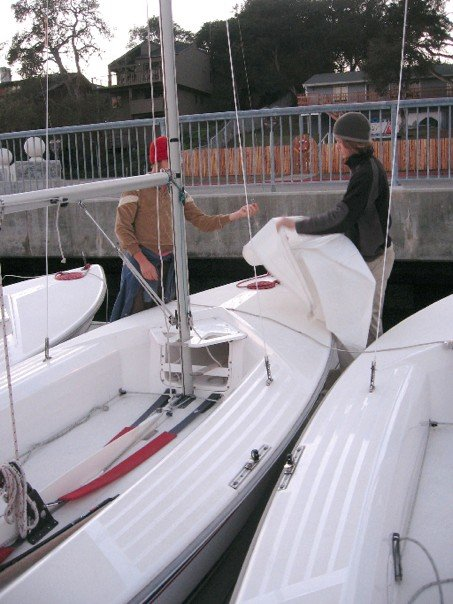

Sun, sleet and snow in Nevada City and Santa Cruz
As of Friday, December 28 at 16.30 or so PST, this is what the view from my house looks like.
It seemed much more snowy than it looks to me now. Nollgradigt, lite snö på marken och snö och regn som kommer ner.
Jag vet inte vilket språk jag börde skriva på. Det blir nog en blandning överallt.
This was the second snow of the year in our town, and the first that stayed for more than a morning. Jättefint med snön i gamla staden. Still snowing.
Och här är några kort på min vän Parker och jag när vi försökte gå på segeltur men fick inte till båten i ställning.

And the harbor (this is where we have spent our time practice sailing for the most part so far.)